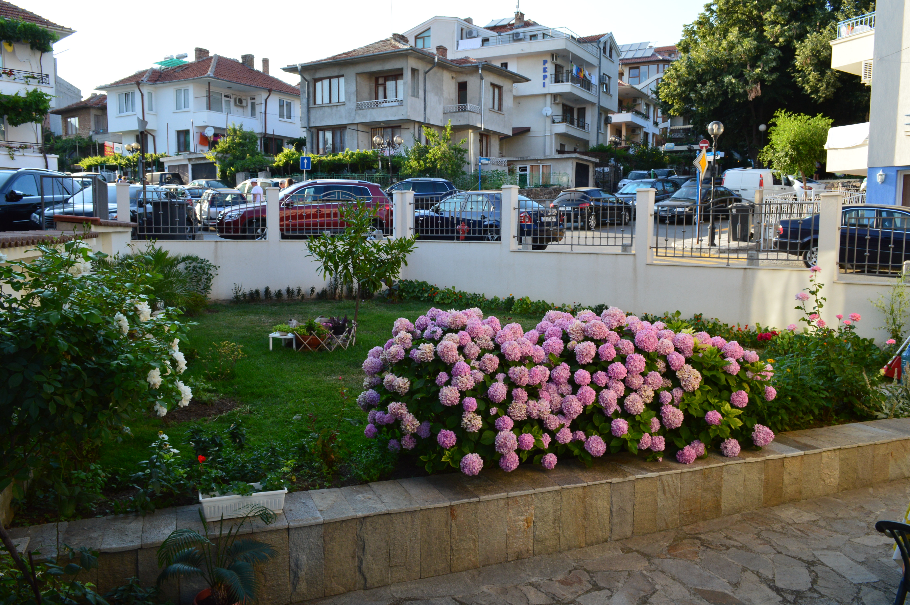
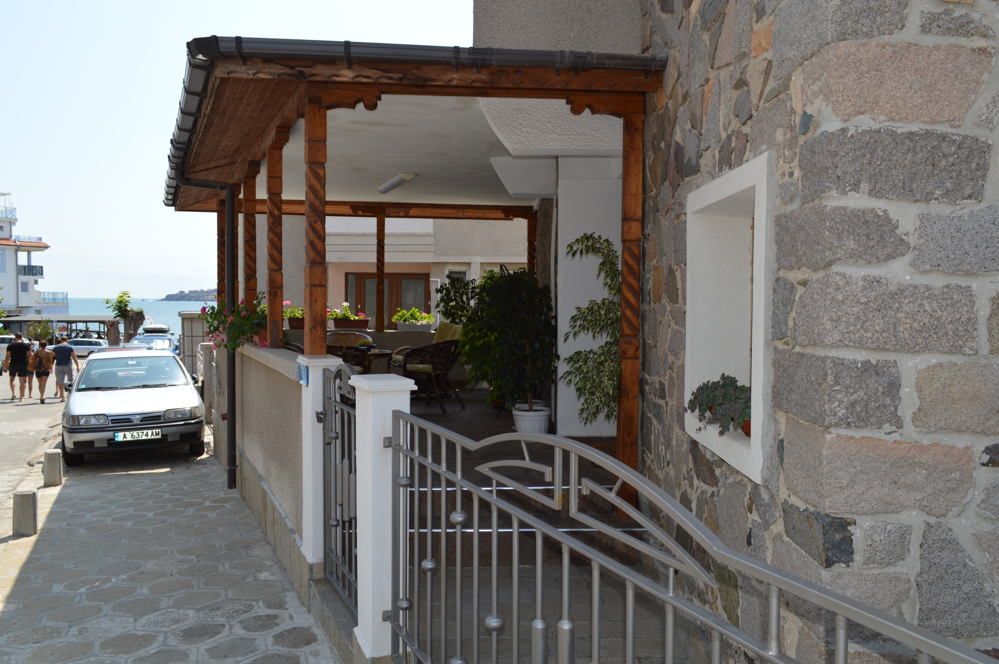

ДОМ Ирины Милевой
частные аппартаменты в г.Созополь, Болгария в 50 метрах от пляжа
- 
- 
-

Созополь - Расположен в южной части болгарского побережья, в 35 км южнее Бургаса. Это небольшой город, приютившийся на каменистом полуострове в южной части Бургасского залива. Узкий перешеек шириной 100 м связывает его с сушей. Из-за нехватки земли город сохранил свою средневековую планировку. Созополь самый древний город на Болгарском Побережье, привлекательный для туристов, которые ищут необыкновенную романтическую атмосферу и для ценителей старинной архитектуры.Старинная часть Созополя объявлена архитектурным заповедником.
Мягкий климат, большое количество солнечных дней, приятное и теплое море, очаровательный вид Созополя, привлекает многих туристов из различных уголков мира.